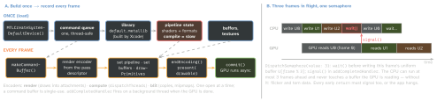

How it works
- Lifetimes: device, queue, library, pipeline states (render / compute) and big resources are long-lived; pipeline compilation is the classic first-use hitch — build at load (or cache with
MTLBinaryArchive). Command buffers and encoders are cheap and single-use.
- Storage modes:
.shared — CPU + GPU, one copy in unified memory; .private — GPU only, fastest for static meshes and render targets (fill via a blit); .memoryless — lives only in tile memory during a pass (depth, MSAA): no RAM at all. Single-use data under 4 KB: setVertexBytes, no buffer.
- Tile-based GPUs: Apple GPUs shade on-chip tiles, then write out. A pass’s
loadAction (.clear / .dontCare vs .load) and storeAction (.dontCare vs .store) decide the memory traffic — never load or store what you do not need.
- MSL is C++-based:
vertex, fragment and kernel functions; bindings by attribute — [[buffer(n)]], [[texture(n)]], [[vertex_id]], [[stage_in]], [[position]], [[thread_position_in_grid]]. Clip space: x, y in -1…1 (y up), depth 0…1; texture coordinates start top-left.
- MTKView (MetalKit) wraps a
CAMetalLayer. Modes: timer (default, preferredFramesPerSecond = 60) · on setNeedsDisplay (isPaused + enableSetNeedsDisplay) · explicit draw(). Reading currentRenderPassDescriptor acquires the drawable — do it as late as
possible; the drawable pool is tiny.
- Background: iOS refuses GPU work from a backgrounded app (the command buffer fails) — pause on resign-active. iOS 26 exception:
BGContinuedProcessingTask + the background-GPU entitlement, where supportedResources includes .gpu.
- Metal 4 (iOS 26, A14 / M1 and later), opt-in beside the classic API:
MTL4CommandQueue; command buffers made by the device with your own MTL4CommandAllocator; MTL4ArgumentTable for bindings; MTL4Compiler for explicit shader compilation; residency sets; MTLTensor + an ML encoder; MetalFX frame interpolation.
Example — the frame loop (MTKViewDelegate)
func draw(in view: MTKView) {
inFlight.wait()
let u = uniforms[frame % 3]; frame += 1
write(time: CACurrentMediaTime(), into: u)
guard let cb = queue.makeCommandBuffer(),
let rpd = view.currentRenderPassDescriptor,
let enc = cb.makeRenderCommandEncoder(descriptor: rpd),
let drawable = view.currentDrawable
else { inFlight.signal(); return }
enc.setRenderPipelineState(pipeline)
enc.setVertexBuffer(u, offset: 0, index: 0)
enc.drawPrimitives(type: .triangle, vertexStart: 0, vertexCount: 3)
enc.endEncoding(); cb.present(drawable)
cb.addCompletedHandler { [inFlight] _ in inFlight.signal() }
cb.commit()
}
Shaders — vertex, fragment, compute (MSL)
struct VOut { float4 pos [[position]]; float4 color; };
vertex VOut vmain(uint id [[vertex_id]],
constant float2 *pts [[buffer(0)]]) {
return { float4(pts[id], 0, 1), float4(1, 0.5, 0, 1) }; }
fragment float4 fmain(VOut in [[stage_in]]) { return in.color; }
kernel void invert(texture2d<float, access::read> src [[texture(0)]],
texture2d<float, access::write> dst [[texture(1)]],
uint2 gid [[thread_position_in_grid]]) {
if (gid.x >= dst.get_width() || gid.y >= dst.get_height()) return;
float4 c = src.read(gid); dst.write(float4(1 - c.rgb, c.a), gid); }
SwiftUI shaders (iOS 17) — Metal without the setup
[[ stitchable ]] MSL functions from ShaderLibrary; SwiftUI passes position (+ colour or layer), you pass .float, .float2, .color, .image arguments:
.colorEffect | half4 f(float2 position, half4 color, args…) |
.distortionEffect | float2 f(float2 position, args…): source point |
.layerEffect | half4 f(float2 position, SwiftUI::Layer l, args…) |
#include <metal_stdlib>
#include <SwiftUI/SwiftUI_Metal.h>
using namespace metal;
[[ stitchable ]] half4 wave(float2 p, SwiftUI::Layer layer, float t) {
return layer.sample(float2(p.x, p.y + 6 * sin(p.x / 20 + t))); }
Text("Hello").layerEffect(ShaderLibrary.wave(.float(t)),
maxSampleOffset: CGSize(width: 0, height: 6))
Where an app developer meets Metal
SwiftUI shaders · Core Image kernels · camera / video frames as textures (CVMetalTextureCache) · MPS, MPSGraph, Core ML on the GPU · SpriteKit, SceneKit, RealityKit, drawingGroup() · games (MetalFX).
Traps
- Pipeline or queue built per frame — compile stalls.
- CPU rewrites a buffer the GPU still reads — flicker.
- Early
return without signal() — frozen after 3 frames.
waitUntilCompleted() on main — CPU, GPU in series..load / .store on every attachment — wasted bandwidth.- Sampling off
position with no maxSampleOffset.
Remember
“Compile once, record every frame, commit and let go — three buffers, one semaphore.”